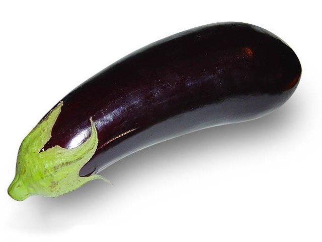

Roasted Eggplant

Description
After making revisions to an Italian recipe for antipasto, I came up with this eggplant salad dish. It is not as time intensive as it appears; many of the steps can be performed simultaneously.
Ingredients
- 6 medium red bell peppers, halved and seeded
- 4 small baby eggplants, halved lengthwise
- salt and freshly ground black pepper to taste
- 4 tablespoons olive oil, divided, or more as needed
- 2 tablespoons balsamic vinegar
- 1 clove garlic, chopped
- 2 dashes chile sauce
- 1 (6 ounce) jar artichoke hearts
- ½ cup oil-packed sun-dried tomatoes, drained
- 4 large fresh basil leaves
Steps
- Preheat the oven to 400 degrees F (200 degrees C). Lightly oil a foil-lined baking sheet. Place bell peppers, cut-sides down, on the baking sheet.
- Bake in the preheated oven until beginning to char, about 45 minutes.
- While peppers roast, score eggplant flesh deeply in a diamond cross-hatch pattern with the tip of a knife. Press on the edges of the halves to open the cuts and sprinkle salt over the surface and into the cuts. Set aside, cut-sides up, for 30 minutes.
- Line a baking sheet with parchment paper. Gently squeeze the eggplant over the sink to extract the salty juice and wipe them dry with a paper towel. Brush each half with 1/2 tablespoon olive oil. Arrange each half, cut-side down, on the lined baking sheet.
- Remove bell peppers from the oven and cover with a dish towel. Let stand for 5 minutes. Leave the oven on.
- Roast eggplant in the preheated oven until tender, about 45 minutes. Peel, seed, and slice the peppers while eggplant is roasting.
- Let eggplant cool for at least 20 minutes before handling. Turn flesh-side up. Use a kitchen knife to scrape the flesh from the skin. Divide the flesh along the score lines into cubes. Discard skin.
- Combine eggplant, bell peppers, artichoke hearts, and sun-dried tomatoes in a bowl. Sprinkle with pepper. Pour dressing over vegetables and mix together. Garnish with basil leaves.
RETURN TO MAIN PAGE